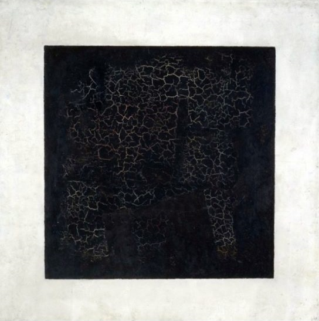

Детство.
- автор:Казимир малевич
- 
- родился 11 (23) февраля 1878 года в доме на окраине Киева. Его отец, Северин Антонович Малевич (1845 - 1902), был управляющим на сахароваренном заводе известного украинского промышленника Терещенко. И отец, и мать, Людвига Александровна (1858 - 1942), по происхождению были поляками. У четы Малевичей родилось четырнадцать детей, но только девять из них дожили до зрелого возраста. Казимир был первенцем; помимо него, в семье было еще четыре сына (Антон, Болеслав , Бронислав, Мечислав) и четыре дочери (Мария, Ванда, Северина, Виктория). Служба отца требовала частых перемещений, и детство будущий художник провел в украинских селениях, окруженных свекольными полями. И через пятьдесят лет Малевич с волнением вспоминал образы благодатной украинской природы, колоритные картины крестьянского труда...
Отрочество.
- автор:Казимир малевич

- родился 11 (23) февраля 1878 года в доме на окраине Киева. Его отец, Северин Антонович Малевич (1845 - 1902), был управляющим на сахароваренном заводе известного украинского промышленника Терещенко. И отец, и мать, Людвига Александровна (1858 - 1942), по происхождению были поляками. У четы Малевичей родилось четырнадцать детей, но только девять из них дожили до зрелого возраста. Казимир был первенцем; помимо него, в семье было еще четыре сына (Антон, Болеслав , Бронислав, Мечислав) и четыре дочери (Мария, Ванда, Северина, Виктория). Служба отца требовала частых перемещений, и детство будущий художник провел в украинских селениях, окруженных свекольными полями. И через пятьдесят лет Малевич с волнением вспоминал образы благодатной украинской природы, колоритные картины крестьянского труда...
Юность.
- автор:Казимир малевич

- родился 11 (23) февраля 1878 года в доме на окраине Киева. Его отец, Северин Антонович Малевич (1845 - 1902), был управляющим на сахароваренном заводе известного украинского промышленника Терещенко. И отец, и мать, Людвига Александровна (1858 - 1942), по происхождению были поляками. У четы Малевичей родилось четырнадцать детей, но только девять из них дожили до зрелого возраста. Казимир был первенцем; помимо него, в семье было еще четыре сына (Антон, Болеслав , Бронислав, Мечислав) и четыре дочери (Мария, Ванда, Северина, Виктория). Служба отца требовала частых перемещений, и детство будущий художник провел в украинских селениях, окруженных свекольными полями. И через пятьдесят лет Малевич с волнением вспоминал образы благодатной украинской природы, колоритные картины крестьянского труда...